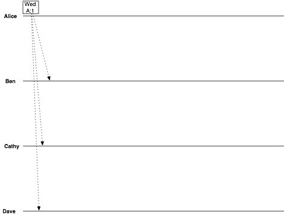
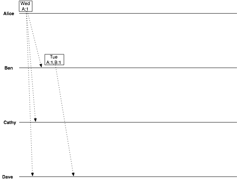
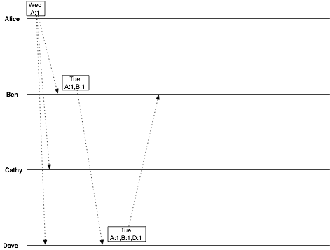
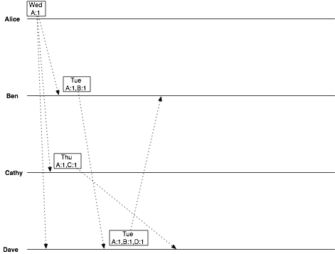
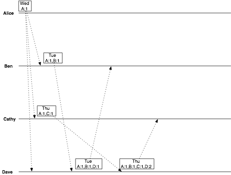
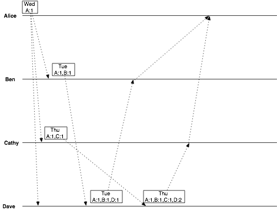
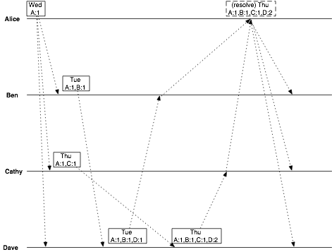
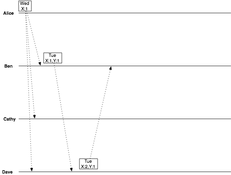
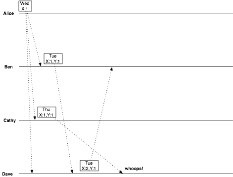

Why Vector Clocks are Hard
April 05, 2010 at 03:16 PM | categories: RiakA couple of months ago, Bryan wrote about vector clocks on this blog. The title of the post was "Why Vector Clocks are Easy"; anyone who read the post would realize that he meant that they're easy for a client to use when talking to a system that implements them. For that reason, there is no reason to fear or avoid using a service that exposes the existence of vector clocks in its API.
Of course, actually implementing such a system is not easy. Two of the hardest things are deciding what an actor is (i.e. where the incrementing and resolution is, and what parties get their own field in the vector) and how to keep vclocks from growing without bound over time.
In Bryan's example the parties that actually proposed changes ("clients") were the actors in the vector clocks. This is the model that vector clocks are designed for and work well with, but it has a drawback. The width of the vectors will grow proportionally with the number of clients. In a group of friends deciding when to have dinner this isn't a problem, but in a distributed storage system the number of clients over time can be large. Once the vector clocks get that large, they not only take up more space in disk and RAM but also take longer to compute comparisons over.
Let's run through that same example again, but this time visualize the vector clocks throughout the scenario. If you don't recall the whole story in the example, you should read Bryan's post again as I am just going to show the data flow aspect of it here.
Vector Clocks by Example, in detail
Start with Alice's initial message where she suggests Wednesday. (In the diagrams I abbreviate names, so that "Alice" will be "A" in the vclocks and so on for Ben, Cathy, and Dave.)
date = Wednesday vclock = Alice:1
Ben suggests Tuesday:
date = Tuesday vclock = Alice:1, Ben:1
Dave replies, confirming Tuesday:
date = Tuesday vclock = Alice:1, Ben:1, Dave:1
Now Cathy gets into the act, suggesting Thursday:
date = Thursday vclock = Alice:1, Cathy:1
Dave has two conflicting objects:
date = Tuesday vclock = Alice:1, Ben:1, Dave:1
and
date = Thursday vclock = Alice:1, Cathy:1
Dave can tell that these versions are in conflict, because neither vclock "descends" from the other. Luckily, Dave's a reasonable guy, and chooses Thursday. Dave also created a vector clock that is a successor to all previously-seen vector clocks. He emails this value back to Cathy.
date = Thursday vclock = Alice:1, Ben:1, Cathy:1, Dave:2
So now when Alice asks Ben and Cathy for the latest decision, the replies she receives are, from Ben:
date = Tuesday vclock = Alice:1, Ben:1, Dave:1
and from Cathy:
date = Thursday vclock = Alice:1, Ben:1, Cathy:1, Dave:2
From this, she can tell that Dave intended his correspondence with Cathy to override the decision he made with Ben. All Alice has to do is show Ben the vector clock from Cathy's message, and Ben will know that he has been overruled.
That worked out pretty well.
Making it Easier Makes it Harder
Notice that even in this short and simple example the vector clock grew from nothing up to a 4-pairs mapping? In a real world scenario with long-lived data, each data element would end up with a vector clock with a length proportional to the number of clients that had ever modified it. That's a (potentially unbounded) large growth in storage volume and computation, so it's a good idea to think about how to prevent it.
One straightforward idea is to make the servers handling client requests be the "actors", instead of representing the clients directly. Since any given system usually has a known bounded number of servers over time and also usually has less servers than clients, this serves to reduce and cap the size of the vclocks. I know of at least two real systems that have tried this. In addition to keeping growth under control, this approach attracts people because it means you don't expose "hard" things like vector clocks to clients at all.
Let's think through the same example, but with that difference, to see how it goes. We'll assume that a 2-server distributed system is coordinating the communication, with clients evenly distributed among them. We'll be easy on ourselves and allow for client affinity, so for the duration of the session each client will use only one server. Alice and Dave happen to get server X, and Ben and Cathy get server Y. To avoid getting too complicated here I am not going to draw the server communication; instead I'll just abstract over it by changing the vector clocks accordingly.
We're fine through the first few steps:
The only real difference so far is that each update increments a vector clock field named for the client's chosen server instead of the client itself. This will mean that the number of fields needed won't grow without bound; it will be the same as the number of servers. This is the desired effect of the change.
We run into trouble, though, when Cathy sends her update:
In the original example, this is where a conflict was created. Dave sorted out the conflict, and everything was fine. With our new strategy, though, something else happened. Ben and Cathy were both modifying from the same original object. Since we used their server id instead of their own name to identify the change, Cathy's message has the same vector clock as Ben's! This means that Dave's message (responding to Ben) appears to be a simple successor to Cathy's... and we lose her data silently!
Clearly, this approach won't work. Remember the two systems I mentioned that tried this approach? Neither of them stuck with it once they discovered that it can be expected to silently lose updates.
For vector clocks to have their desired effect without causing accidents such as this, the elements represented by the fields in the vclock must be the real units of concurrency. In a case like this little example or a distributed storage system, that means client identifiers, not server-based ones.
Just Lose a Little Information and Everything Will Be Fine
If we use client identifiers, we're back in the situation where vector clocks will grow and grow as more clients use a system over time. The solution most people end up with is to "prune" their vector clocks as they grow.
This is done by adding a timestamp to each field, and updating it to the current local time whenever that field is incremented. This timestamp is never used for vclock comparison -- that is purely a matter of logical time -- but is only for pruning purposes.
This way, when a given vclock gets too big, you can remove fields, starting at the one that was updated longest ago, until you hit a size/age threshold that makes sense for your application.
But, you ask, doesn't this lose information?
Yes, it does -- but it won't make you lose your data. The only case where this kind of pruning will matter at all is when a client holds a very old copy of the unpruned vclock and submits data descended from that. This will create a sibling (conflict) even though you might have been able to resolve it automatically if you had the complete unpruned vclock at the server. That is the tradeoff with pruning: in exchange for keeping growth under control, you run the chance of occasionally having to do a "false merge"... but you never lose data quietly, which makes this approach unequivocally better than moving the field identifiers off of the real client and onto the server.
Review
So, vclocks are hard: even with perfect implementation you can't have perfect information about causality in an open system without unbounded information growth. Realize this and design accordingly.
Of course, that is just advice for people building brand new distributed systems or trying to improve existing ones. Using a system that exposes vclocks is still easy.

maker of Riak, the Internet-Scale Data Store.
Latest blog posts
Categories
- Screencast (4)
- JavaScript (2)
- Benchmarking (1)
- Joyent (1)
- NoSQL (34)
- Innostore (2)
- Podcast (3)
- Ruby (4)
- Developers (2)
- Erlang (9)
- Core (1)
- Riak (59)
- Eventual Consistency (1)
- Beer (1)
- Riak Core (1)
- Map/Reduce (7)
- Links (2)
- Nitrogen (1)
- Distributed Systems (3)
- Analytics (1)
- Fault Tolerance (2)
- InnoDB (2)
- erlang_js (1)
- Rebar (3)
- Startups (2)
- Resources (1)
- Scaling (2)
- Community (7)
- Webmachine (3)
- Database (26)
- Search (4)
- Ops (2)
- Scalability (3)
- Operations (2)
- Schema (4)
- (2)
- Velocity (1)
- Production (1)
Archives
- September 2010 (5)
- August 2010 (5)
- July 2010 (9)
- June 2010 (5)
- May 2010 (7)
- April 2010 (6)
- March 2010 (4)
- February 2010 (5)
- January 2010 (4)
- December 2009 (8)
- November 2009 (3)
- October 2009 (1)
Other Recommended Reading
- The RESTful Way
- The Beerriot Blog
- Rusty Klophaus
- Gradual Epiphany